Example Use Cases
This set of use cases is a small subset of the typical types of analyses that can be conducted using the seeq-correlation tool.
Use Case 1. Identifying Signal Relationships
A well-known industrial dataset for an Eastman process (see Figure 8 and 9) contains a significant number of unit operations and signals. To gain broad, initial insights into the signal relationships present in the operation, correlation analysis is performed on the 3 days of data shown in the trends.
| 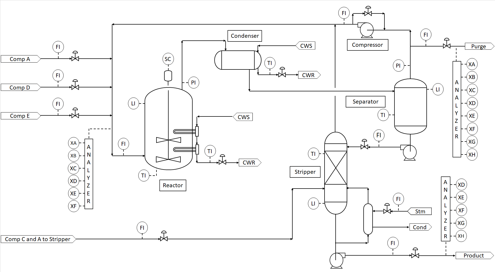 |
| Figure 8. Process Flow Diagram (part of an Eastman process.) |
| 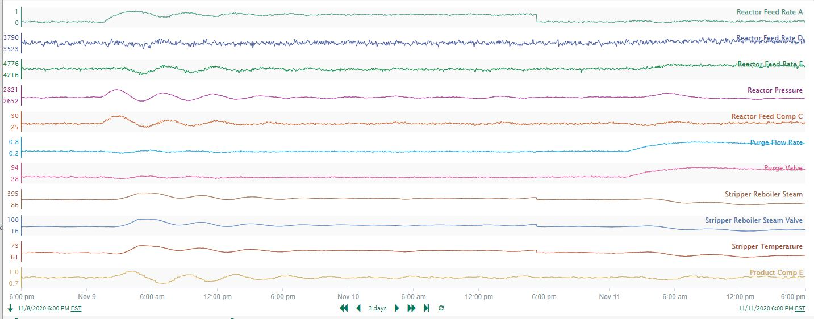 |
| Figure 9. Signal trends associated to the Eastman process in Figure 8. |
The user checks the data trends closely, verifies the dataset is cleansed of any issues that might disrupt the accuracy of results, and runs the correlation analysis. They decide to highlight only the strongest correlations in the dataset; the coefficients are filtered to display only the “Outer range” of values (> 0.7 or < -0.7). This gives immediate insights into the dataset (see the correlation heatmap in Figure 10)
| 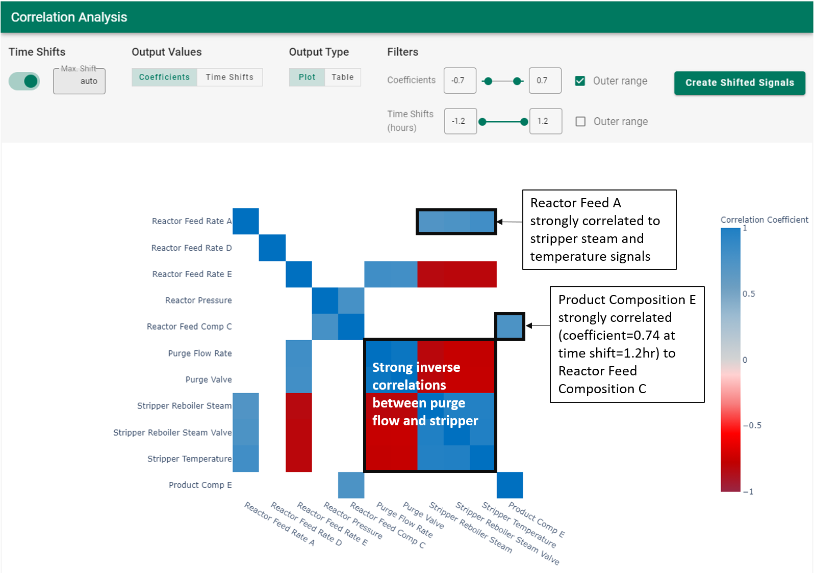 |
| Figure 10. Correlation heatmap for the Eastman process. |
Insights:
The purge flow from the Separator is highly inversely correlated with the Stripper signals
Reactor Feed A has a strong positive correlation with the Stripper signals
Perhaps most interestingly, a product quality relationship is easily identified: the composition of impurity E in the product is strongly correlated with the composition of component C feeding the reactor (see Figure 10). This is a relationship that spans the entire process flow sheet, and the time shift is a substantial 1.2 hours. Subsequent investigation of the time series trends confirms the relationship highlighted by the correlation analysis. In the trends in Figure 11, the highlighted time delay from the green signal to the red signal is 1.2 hours.
| Figure 11. Time delay between the reactor feed of component C and the composition impurity E in the product. |
Use Case 2. Large Dataset Exploration
A plant-wide dataset was collected for the process shown in Figure 12. Example data trends for 7 of the signals are shown in Figure 13 where a persistent oscillation is clearly seen.
| 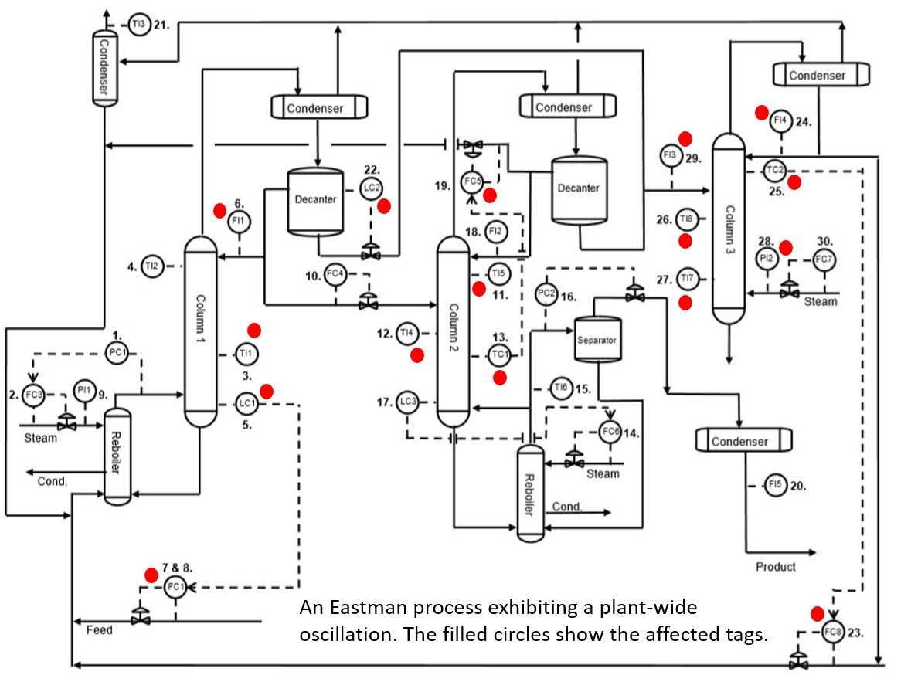 |
| Figure 12. Plant-wide diagram of an Eastman process. |
| 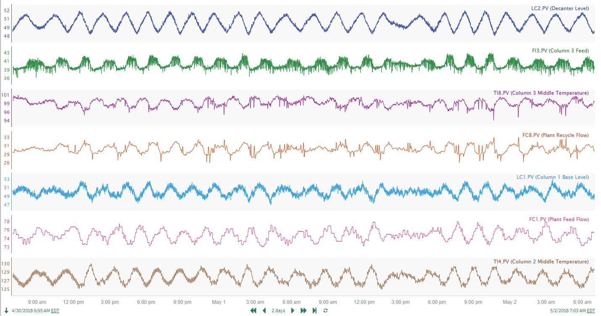 |
| Figure 13. Example signals for a subset of sensors of the process shown in Figure 12. |
Correlation analysis was conducted on the entire dataset (~28 signals), and the resulting matrix was filtered to show only strong correlations (> 0.65 or < -0.65). Even though the display is limited to only strong correlations, there are several rows where 7-8 signals are highly correlated with the reference signal on the left hand side (see Figure 14). The large number of correlations flags a potential plant or unit wide upset. In this case, a plant-wide oscillation was present and affecting each of the signals identified by the red circles in Figure 12. Used in an exploratory fashion, correlation analysis can highlight widespread issues affecting process operation.
| 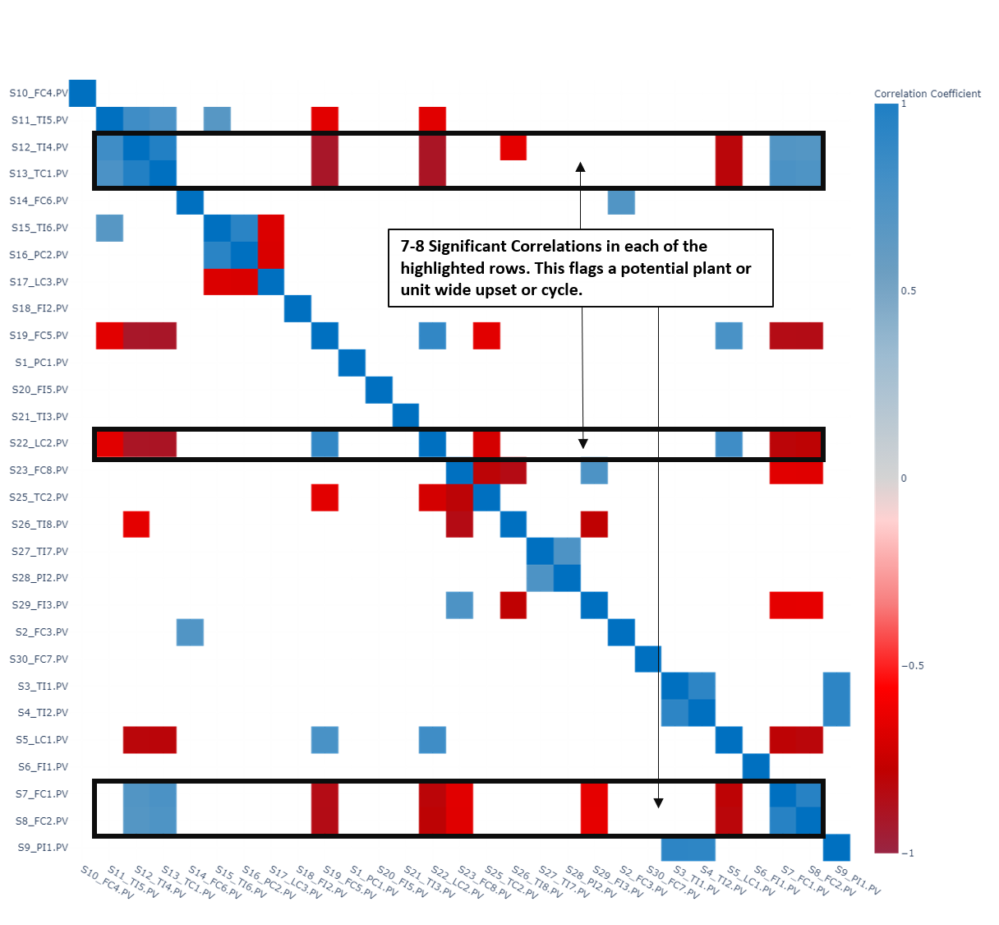 |
| Figure 14. Correlation heatmap filtered to show only correlations > 0.65 or < -0.65 of plant-wide Eastman dataset. |
Use Case 3: Optimally Aligning Signals for Prediction Modeling
As a precursor to prediction modeling, correlation analysis can be valuable for aligning signals whose relationships are masked by time lags and delays. The aligned signals can then be used to generate improved, more accurate prediction models. In this example, the user wants to find out what process variables lead to a high concentration of Component E in the product stream (see Figure 15). Component E is considered to be a contaminant and should be minimized.
| 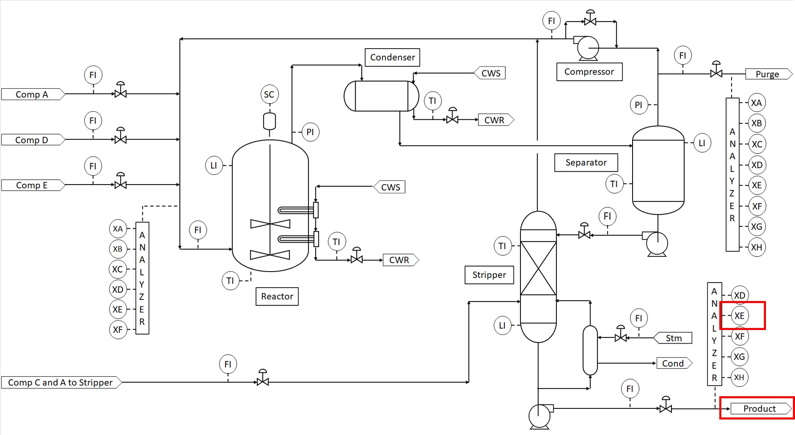 |
| Figure 15. Process flow diagram of a process with one product stream. |
After cleaning and smoothing the signals as needed, the user runs correlation analysis on the entire dataset and filters the results to show only strong correlations (> 0.5 or < -0.5). The resulting correlation heatmap identifies several signals which are significantly correlated with the concentration of Component E in the product stream (see Figure 16). Using the process subject matter expertise, the user selects a subset of the correlated signals (Stripper Temperature, Reactor Feed Rate Total, Recycle Compressor Power, Reactor Feed Comp A Cleansed, and Reactor Feed Comp C Cleansed) for Product Comp E prediction model development
| 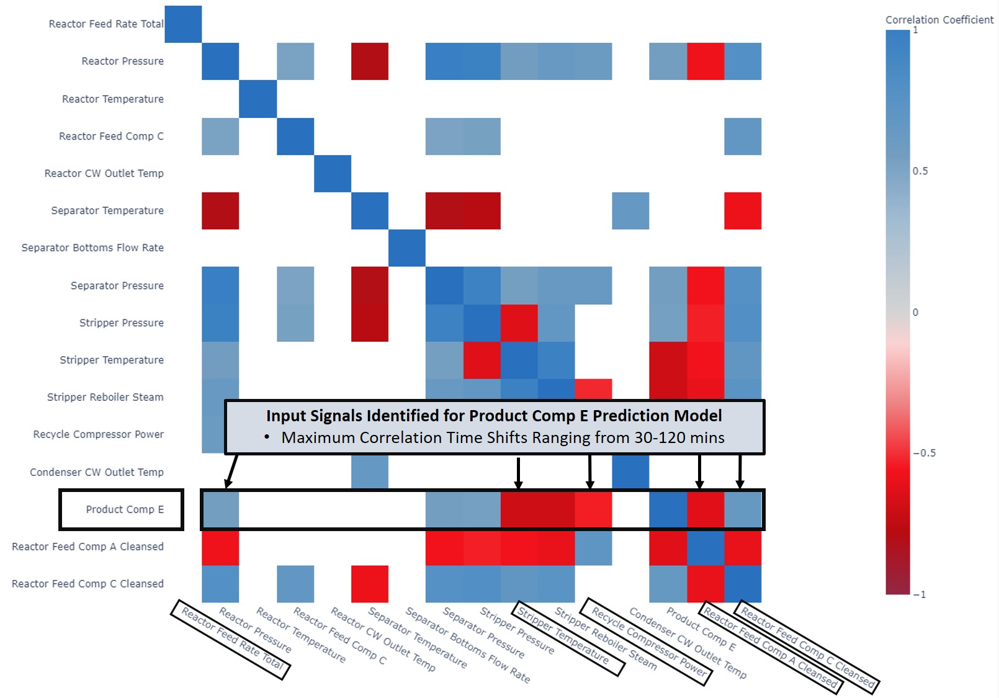 |
| Figure 16. Correlation heatmap filtered to show only correlations > 0.5 or < -0.5. |
Using the “Create Shifted Signals” function, all dataset signals are aligned to maximize their correlation with Product Comp E. The newly created, aligned signals are available in the trend display in Seeq Workbench (Figure 17), where the user builds a Product Comp E prediction model using the 5 selected input signals.
| 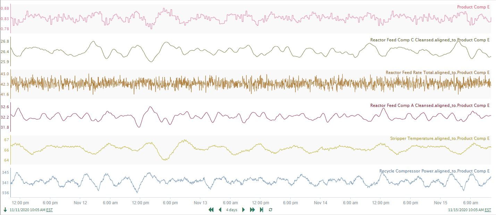 |
| Figure 17. Time-aligned signals from correlation analysis. |
The resulting prediction model in Figure 18 (shown in red) does an excellent job predicting Product Comp E (shown in blue). For comparison, a prediction model using the raw, non-shifted versions of the same 5 input signals (shown in green in Figure 18) is much less accurate, as seen by the time periods where the green signal moves well ahead of Product Comp E. These inaccuracies occur because the changes in Product Comp E are significantly time delayed in response to changes at the front end of the process. Because correlation analysis identifies the optimal time shift and alignment of the input signals to compensate for the process response times, the resulting prediction model is much improved (r^2 = 0.60 versus 0.38 for the raw data), and the Reactor Feed Rate Total is correctly identified as having a statistically significant effect.
| 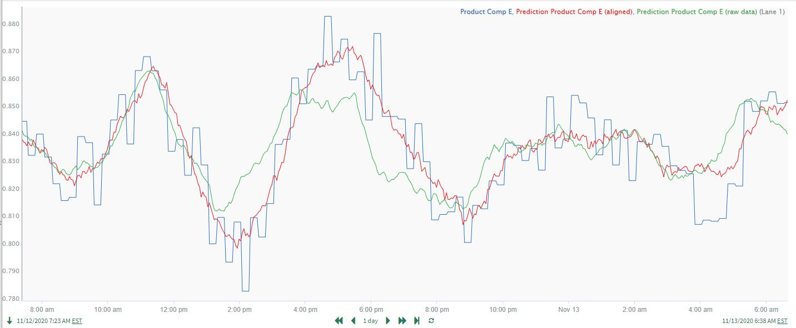 |
| Figure 18. Comparison of prediction models using time-shifted signals (red) and raw, non-shifted signals (green). |
Use Case 4: Quantifying Relationships and the Importance of Preprocessing the Data
It is always important to do preprocessing on the data set before it is used in correlation analysis. Preprocessing may include removing downtime data, removing data outliers, smoothing signals, removing unnecessary redundant signals, etc. The user should always visually inspect the dataset closely prior to launching correlation analysis to ensure that these issues have been addressed. Data cleansing can be critical to achieving the best results. An often-overlooked data feature which typically requires preprocessing is long-term data drift.
In this example, a user wants to quantify the correlation and time response for a known reactor yield relationship. The product yield is measured downstream of a reaction process, and the reactor feed ratio is adjusted to maintain the target yield (which varies according to product grade). As the reactor catalyst degrades over time, higher reactor feed ratios are required to maintain the same yield, resulting in a long-term upward drift in the ratio. The strong, time delayed correlation between feed ratio changes and yield, as well as the long-term upward drift in the ratio, are clearly seen in the trends in Figure 19.
| 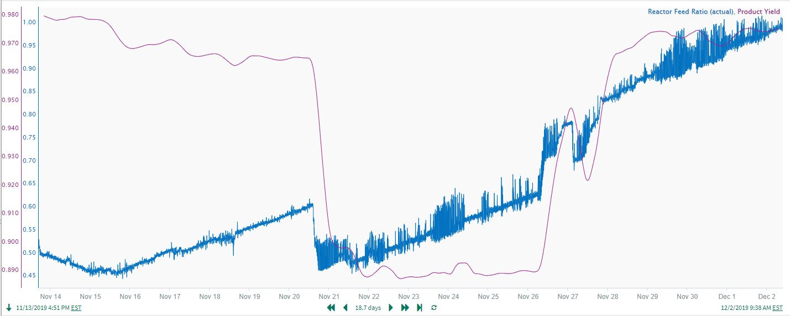 |
| Figure 19. Time delayed correlation between feed ratio changes and yield. |
Correlation analysis will effectively handle the time delays/lags in the yield response to feed ratio changes. However, the slow upward drift in the reactor feed ratio must first be removed to obtain accurate results from correlation analysis. A common drift removal approach is to fit a simple reactor run time model to predict the drifting “Reactor Feed Ratio (actual)” signal (blue line in Figure 20). Then, the run time predicted “Reactor Feed Ratio Drift” signal ( green line in trend) is subtracted from the actual ratio to give the “Feed Ratio (drift removed)” signal (red line in trend). The end results form a good, preprocessed dataset to use for correlation analysis. To enable comparison of the results with and without drift removed, the “Reactor Feed Ratio (actual)” signal is retained in the dataset used for the Correlation Analysis. The correlation analysis results (Figure 21) give a “Product Yield/Feed Ratio (drift removed)” coefficient of 0.96, versus 0.31 for “Product Yield/Reactor Feed Ratio (actual)”. The much higher correlation coefficient confirms the accuracy gained by first removing the drift.
| 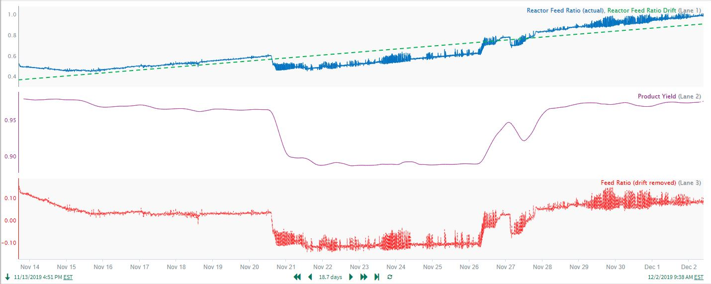 |
| Figure 20. Drifting prediction of Feed Ratio. |
| 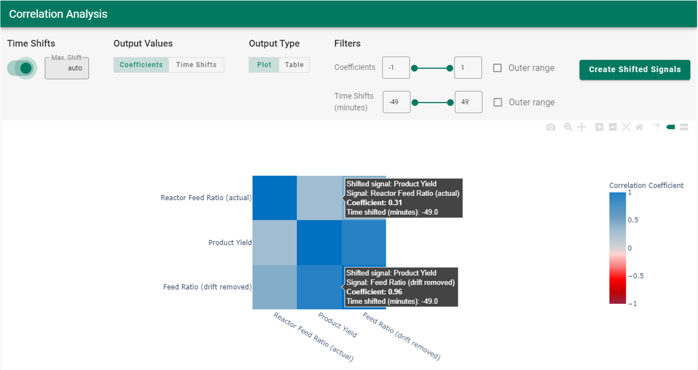 |
| Figure 21. Correlation analysis results contrasting Product Yield to Feed Ratio with and without removing drift. |
As another example of the value in preprocessing (cleansing) prior to applying correlation analysis, a process dataset contains signals for an intermediate process inventory (tank level) and a product flow measured at the end of the process. The strong correlation between the 2 signals is not readily apparent from the time trends (see first trend on the left in Figure 22), and there are fast spikes (outliers) in the product flow that should probably be removed. Applying a small amount of smoothing to the product flow signal (see Smoothed Product Flow in Figure 23) reveals consistent cycles that align well with the persistent process inventory cycles.
| 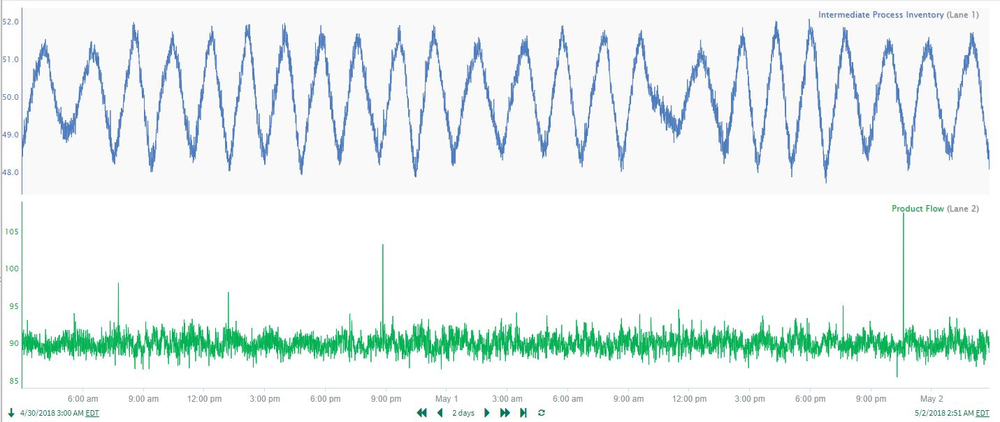 |
| Figure 22. Intermediate Process Inventory and Product Flow signals. |
| 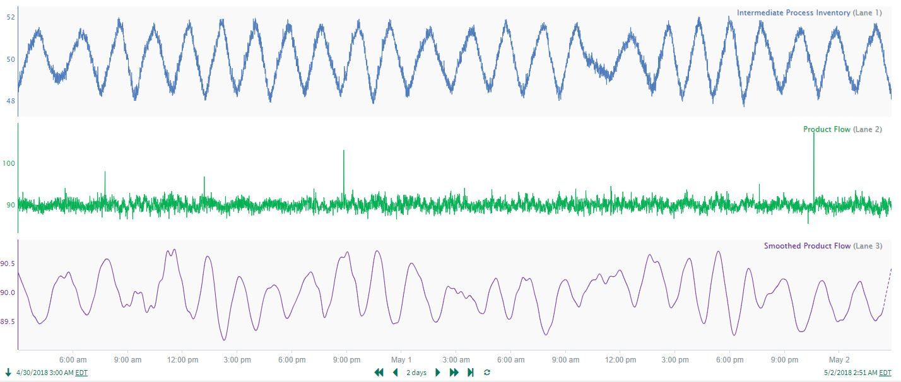 |
| Figure 23. Intermediate Process Inventory, Product Flow and Smoothed Product Flow signals. |
Using the Smoothed Product Flow, correlation analysis results show a vast improvement in identifying the cycling relationship between the inventory signal and the product flow. The Smoothed Product Flow/Intermediate Process Inventory correlation is -0.78, versus only -0.4 for the raw Product Flow (Figure 24). Combining preprocessing (in this case, smoothing) with correlation analysis clearly identifies an important relationship affecting product flow: product flow moves inversely with respect to inventory after a ~10 minute time delay!
| 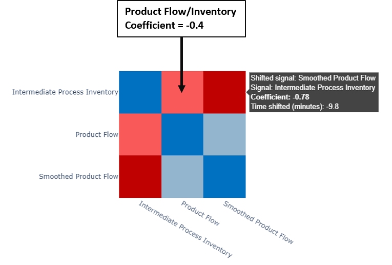 |
| Figure 24. Correlation heatmap including the raw and smoothed product flow signals for comparison. |
Use Case 5: Confirming Expected Process Relationships
Consider again the liquid tank process discussed in the Overview, but this time there is data included for the Flow B Tank Inlet control valve opening, as well as ambient weather measurements for temperature and relative humidity (see Figure 25). As a quick check on process operation, the process engineer may want to do a correlation analysis to confirm that signal relationships are as expected. Almost 14 days of data are available for analysis (Figure 26)
| 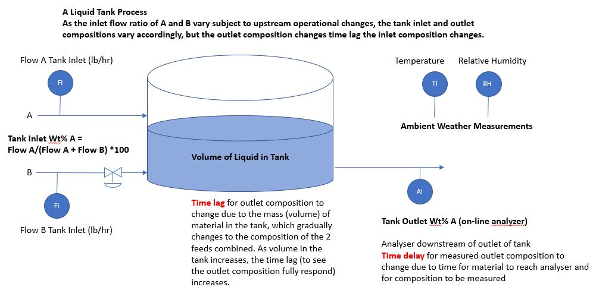 |
| Figure 25. Tank process with two liquid feeds and one outlet. |
| 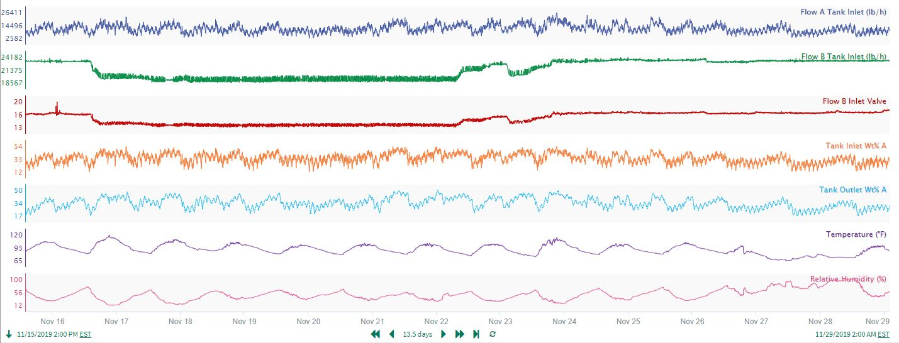 |
| Figure 26. Signals associated to the tank process in Figure 25. |
The user runs correlation analysis and filters the coefficients to show only very high coefficient values (> 0.7 or < -0.7). The boxed sections highlighted on the correlation matrix in Figure 27 confirm 3 expected process relationships:
Flow B Tank Inlet is highly correlated with the Flow B Inlet Valve, with negligible time shift. The flow and valve relationship is as expected, therefore the control valve is likely performing well.
The Tank Outlet composition correlates well with the calculated inlet composition. Therefore, the flow measurements and the outlet analyzer appear to reconcile well.
As expected, the weather measurements (temperature and relative humidity) are strongly correlated in an inverse relationship shown by the deep red colors. The analysis also shows the weather measurements are uncorrelated with any of the process measurements, so there is no need for concern about undesired process variation due to weather changes.
| 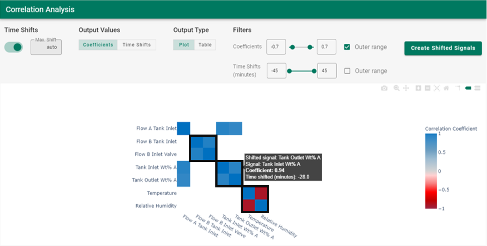 |
| Figure 27. Correlation heatmap for the tank process in Figure 25. |
While this example is a small dataset with relatively simple relationships, the same concepts apply for more complex datasets: correlation analysis can be used to quickly confirm expected relationships as well as discover or rule out unexpected effects.